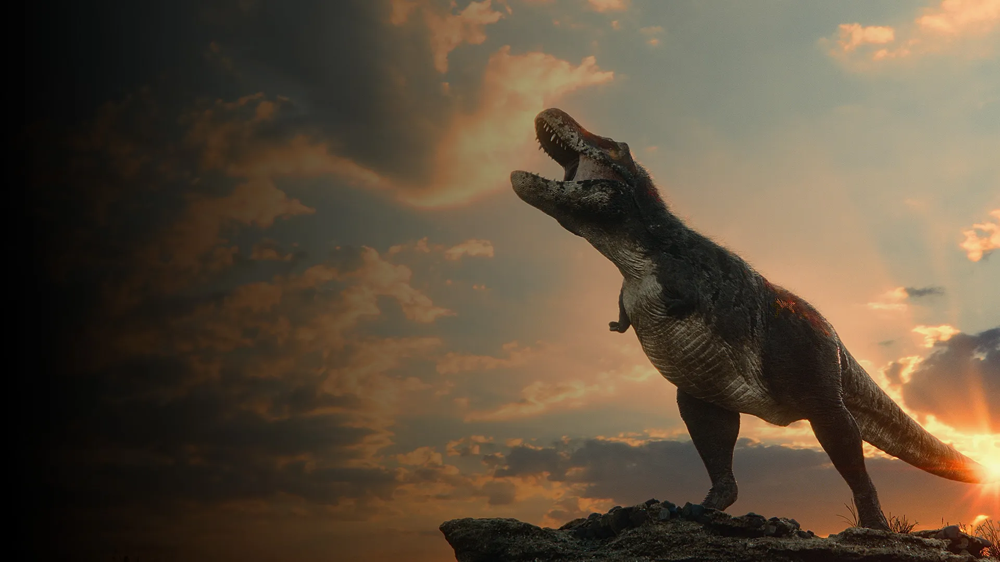
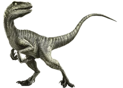

Dinossauros
Tiranossauro Rex
O rei dos dinossauros! Com mais de 10 metros de comprimento, o Tiranossauro Rex é uma das principais atrações do Dino Park Tech. Viveu no final do período Cretáceo, há aproximadamente 68 a 66 milhões de anos. Um dos maiores predadores terrestres, alcançando até 12 metros de comprimento e pesando até 9 toneladas. Possuía mandíbulas poderosas com dentes serrilhados, ideais para triturar ossos.
Tricerátops
Este herbívoro de três chifres é um dos dinossauros mais reconhecíveis. Viveu no final do período Cretáceo, cerca de 68 a 66 milhões de anos atrás. Um dos dinossauros herbívoros mais conhecidos, o Tricerátops tinha três chifres na cabeça e um grande colar ósseo. Podia medir até 9 metros de comprimento e pesar cerca de 12 toneladas.

Velociraptor
Famoso por sua velocidade e inteligência, o Velociraptor é uma das criaturas mais fascinantes do parque, se destacava por sua inteligência avançada e viveu durante o final do período Cretáceo, há cerca de 75 a 71 milhões de anos. Um pequeno carnívoro que media cerca de 2 metros de comprimento e pesava cerca de 15 kg. Possuía garras afiadas e uma cauda longa e rígida que ajudava na manobrabilidade.
